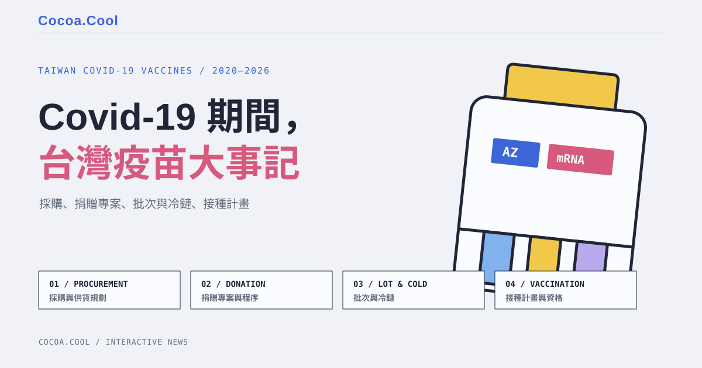

2026 爭議回看
TAIWAN COVID-19 VACCINES / 2020–2026
Covid-19 期間，
台灣疫苗大事記

同一段 BNT 爭議，常被說成一個問題。但採購、贈與、到貨與施打是可核對的行政軌跡；政治人物與評論者談的是另一條、會隨時間改寫的公共論述。
讀法：先沿主線看每一劑如何成為可接種的疫苗；再到對照台，將不同立場的話放回它發生的時間，並連回可檢查的資料。
THE VERIFIABLE TRACK
一批疫苗，進入接種計畫前
這不是食品的流通鏈，而是藥品的採購、專案、批次與接種程序；不以政治評語取代紀錄。
01 / PROCUREMENT採購與供貨規劃政府的 AZ、Moderna、COVAX 合約與預定供貨。
02 / DONATION PROJECT捐贈專案與程序企業、慈善團體與國際夥伴的捐贈，須進入正式處理程序。
03 / LOT & COLD CHAIN抵台、批次與冷鏈每批到貨後，經必要檢驗放行、冷鏈配送，才成為接種端可用疫苗。
04 / VACCINATION接種計畫與資格先依醫療／防疫與風險排序，再逐步擴及年齡與一般民眾。
PROCUREMENT × DONATION × ACCESS
從合約到手臂的時間軸
點選節點，查看該事件的內容與原始／具名新聞來源。
A DIFFERENT KIND OF TIMELINE
THE PUBLIC ARGUMENT
不是誰贏：是誰在何時，怎麼說
這裡不替任何一句政治話下「真／假」結論，而是分開標示事實主張、詮釋與價值批評。
選一個反覆出現的主張，
看它如何被不同人使用。
看它如何被不同人使用。
「政府是否阻擋民間 BNT」、「掮客風險是否被忽略」、「30 年到底指什麼」是不同命題。點選後，卡片會依發言者呈現；下方則連回可供讀者自行核對的資料。
DATA HANDLING PRINCIPLES